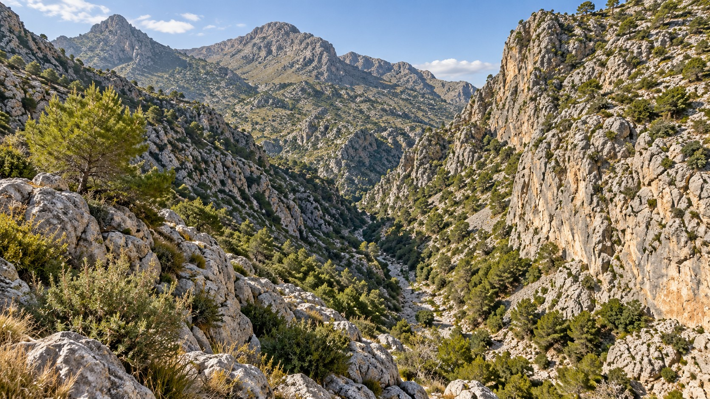
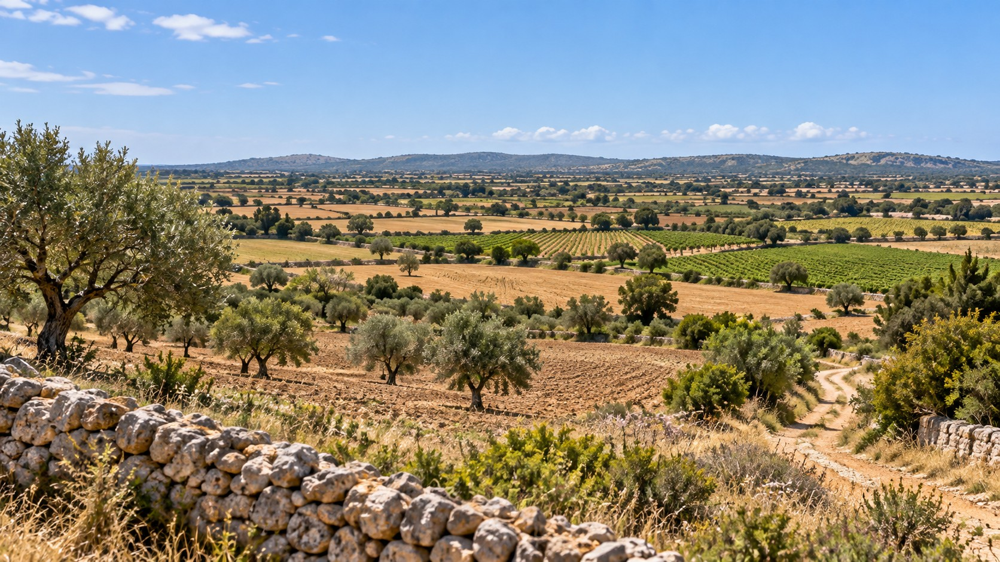
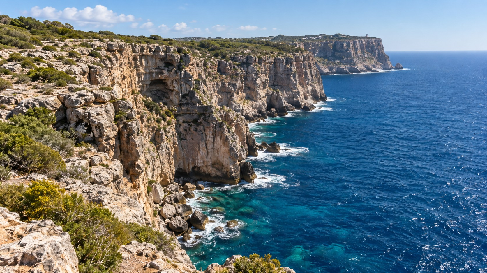
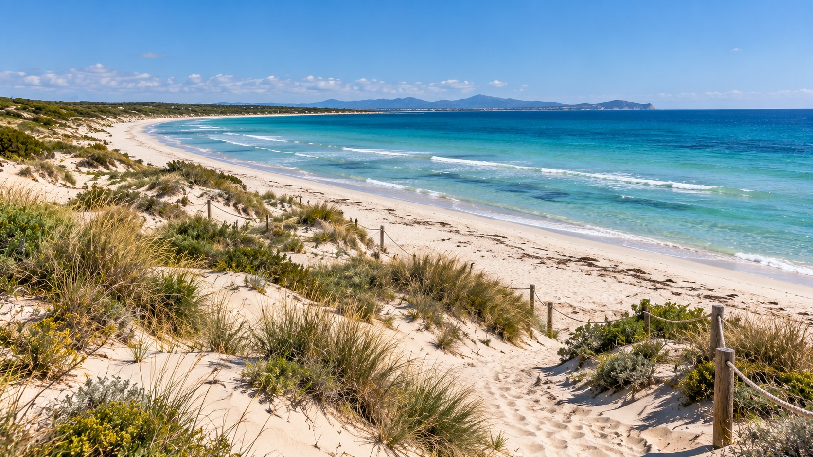

GEO-01 · Llegim un paisatge¶
Què podem saber simplement mirant-lo?¶
1 · Mirar¶

Què hi veis?¶
Escriviu tres coses que pugueu afirmar només perquè les veis.
2 · Comparar¶

Pensau en el paisatge A i comparau-lo amb aquest.
Quina diferència entre A i B us sembla geològicament més important?
No cercam encara la causa. Primer hem de decidir què és diferent.
3 · Observar no és explicar¶
Compareu aquestes dues afirmacions:
1. El vessant és molt inclinat.
2. L'aigua ha erosionat aquest vessant.
Quina classificació és correcta?
Observar és descriure allò que les dades mostren. Inferir és proposar una explicació a partir d'aquestes observacions.
4 · Relleu i paisatge¶
Tornau mentalment als paisatges A i B.
Hi hem vist, entre altres coses, vessants, una vall o torrentera, vegetació, camps de conreu, camins i murs de pedra.
Quins d'aquests elements descriuen la forma del terreny? Quins formen part del paisatge però no del relleu?
El relleu és el conjunt de formes de la superfície terrestre.
El paisatge inclou el relleu i també altres elements naturals i humans visibles.
El relleu forma part del paisatge, però relleu i paisatge no són sinònims.
5 · Del que actua al que passa¶

Quin agent geològic sembla més evident en aquest paisatge? Què observau que us fa pensar això?
Ara distingirem dues coses que sovint es confonen: l'agent i el procés.
Agent o procés?¶
Pensau la classificació abans de clicar cada terme. En clicar-lo, en veureu la categoria.
Els agents són els elements o forces que actuen sobre el terreny. Els processos descriuen què passa amb els materials.
6 · Una dada nova¶
Tornam al paisatge A.
Ara sabem que el terreny està format principalment per roca calcària.
Aquesta dada pot canviar la nostra interpretació del relleu?
7 · Construïm una explicació millor¶
Dos llocs poden estar sotmesos a processos semblants i, tot i així, presentar relleus molt diferents.
materials + processos geològics + temps → modelatge del relleu
La litologia condiciona com respon el terreny, però no és l'únic factor. També hi poden intervenir l'estructura geològica, la pendent, el clima i el temps d'actuació dels processos.
Per què, per tant, “mateix agent” no significa necessàriament “mateix relleu”?
8 · Transferim: un paisatge nou¶

Ara ja teniu les eines per separar allò que observam d'allò que inferim.
Classificau cada afirmació abans de clicar la resposta.
1. Hi ha una platja arenosa davant la mar.
2. Hi ha acumulacions d'arena amb vegetació darrere la platja.
3. El vent transporta arena des de la platja cap a l'interior.
4. Les acumulacions d'arena s'han format per sedimentació de materials transportats pel vent.
5. La vegetació ajuda a retenir l'arena i a estabilitzar aquestes acumulacions.
9 · Comprovam una inferència¶
Recuperau aquesta afirmació del paisatge D:
El vent transporta arena des de la platja cap a l'interior.
Una inferència no es converteix en una bona explicació només perquè sigui plausible. Necessitam evidències que la puguin posar a prova.
Quina dada seria més útil per comprovar aquesta inferència?
Què ha passat? Hem començat amb una observació, hem formulat una inferència i hem identificat una dada que ens permetria comprovar-la.
Tiquet de sortida¶
Respon individualment:
1. Quina diferència hi ha entre relleu i paisatge?¶
2. Escriu un agent geològic i un procés geològic, i explica per què no són el mateix.¶
3. Per què dos terrenys sotmesos a processos semblants poden presentar relleus diferents?¶
4. Escriu una observació i una inferència sobre el paisatge D.¶
Idees que ens enduim¶
- El relleu forma part del paisatge.
- Observar no és el mateix que inferir o explicar.
- Agent geològic i procés geològic no són el mateix.
- La litologia condiciona com respon el terreny als processos.
- El relleu es modela per la interacció entre materials, processos i temps, juntament amb altres factors.
- Una dada nova pot obligar-nos a revisar una interpretació.
- Una inferència geològica s'ha de poder contrastar amb dades.